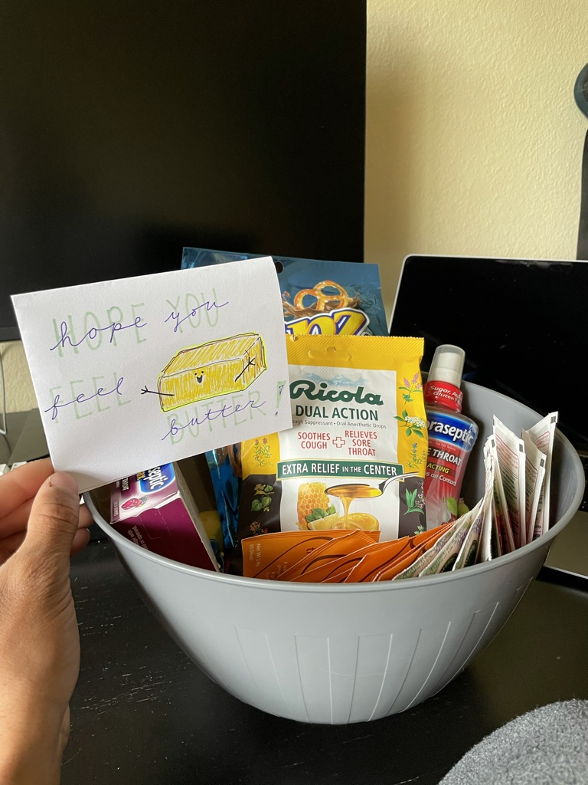

Feeling sick this morning, but I got this so that's nice :) Really thankful to have Chiaki right now
I guess I'm doing some reading to catch up on all my notes that I haven't taken a look at yet.
First thing is:
One thing I find interesting about this reading so far is that to a large degree we have exactly what he is talking about here. With digital we are able to etch an enormous amount of information into a tiny space. However as he notes, even this is massive compared to what he is talking about. I guess it's really to say the beauty of our world. That the entire universe is really capturing an immense amount of information. We are just mere travelers along the way. Just like this big ball of Earth floating through the vastness of space.
He is about to get into DNA and I am also interested in this space. I am not sure how I can contribute or have ideas but I do thing it's quite fascinating.
Do Biological systems have autonomy? How do they 'know' to make proteins? Why does this happen? How did multicellular life form? How did cells form to begin with? What gave cells an advantage in the world? Fundamentally these questions are coming from Feynman. That cellular life is complex, DNA perhaps is a store of information but it is actively being acted upon. How and why did this occur?
Interestingly enough Feynman basically outright predicts Machine Learning, specifically in facial recognition. A technique many of us use on a daily basis now.
Rest of the paper was interesting, and I like his economic incentives at the end.
My brain is struggling to focus for any period of time right now.
I guess now we can go read:
So far enjoying the first 10 examples. However education resonates with me the most.
People ask why we can’t reform the education system. But right now students’ incentive is to go to the most prestigious college they can get into so employers will hire them – whether or not they learn anything
This has been